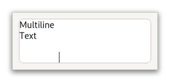

Gtk.TextView¶
Example¶
- Subclasses
None
Methods¶
- Inherited
Gtk.Widget (180), GObject.Object (37), Gtk.Accessible (15), Gtk.Buildable (1), Gtk.Scrollable (9)
- Structs
Virtual Methods¶
- Inherited
Gtk.Widget (25), GObject.Object (7), Gtk.Accessible (6), Gtk.Buildable (9), Gtk.Scrollable (1)
|
|
|
|
|
|
|
|
|
|
|
|
Properties¶
- Inherited
Name |
Type |
Flags |
Short Description |
|---|---|---|---|
r/w/en |
|||
r/w/en |
|||
r/w |
|||
r/w/en |
|||
r/w/en |
|||
r/w/en |
|||
r/w |
|||
r/w/en |
|||
r/w/en |
|||
r/w/en |
|||
r/w/en |
|||
r/w/en |
|||
r/w/en |
|||
r/w/en |
|||
r/w/en |
|||
r/w/en |
|||
r/w/en |
|||
r/w/en |
|||
r/w |
|||
r/w/en |
|||
r/w/en |
Signals¶
- Inherited
Name |
Short Description |
|---|---|
Gets emitted when the user asks for it. |
|
Gets emitted to copy the selection to the clipboard. |
|
Gets emitted to cut the selection to the clipboard. |
|
Gets emitted when the user initiates a text deletion. |
|
Emitted when the selection needs to be extended at location. |
|
Gets emitted when the user initiates the insertion of a fixed string at the cursor. |
|
Gets emitted to present the Emoji chooser for the text_view. |
|
Gets emitted when the user initiates a cursor movement. |
|
Gets emitted to move the viewport. |
|
Gets emitted to paste the contents of the clipboard into the text view. |
|
Emitted when preedit text of the active IM changes. |
|
Gets emitted to select or unselect the complete contents of the text view. |
|
Gets emitted when the user initiates settings the “anchor” mark. |
|
Gets emitted to toggle the |
|
Gets emitted to toggle the overwrite mode of the text view. |
Fields¶
- Inherited
Name |
Type |
Access |
Description |
|---|---|---|---|
parent_instance |
r |
Class Details¶
- class Gtk.TextView(**kwargs)¶
- Bases
- Abstract
No
- Structure
A widget that displays the contents of a [class`Gtk`.TextBuffer].
An example GtkTextview
You may wish to begin by reading the conceptual overview, which gives an overview of all the objects and data types related to the text widget and how they work together.
- CSS nodes
`` textview.view ├── border.top ├── border.left ├── text │ ╰── [selection] ├── border.right ├── border.bottom ╰── [window.popup] ``
GtkTextViewhas a main css node with name textview and style class .view, and subnodes for each of the border windows, and the main text area, with names border and text, respectively. The border nodes each get one of the style classes .left, .right, .top or .bottom.A node representing the selection will appear below the text node.
If a context menu is opened, the window node will appear as a subnode of the main node.
- Accessibility
GtkTextViewuses theGtk.AccessibleRole.TEXT_BOXrole.- classmethod new()[source]¶
- Returns
a new
GtkTextView- Return type
Creates a new
GtkTextView.If you don’t call [method`Gtk`.TextView.set_buffer] before using the text view, an empty default buffer will be created for you. Get the buffer with [method`Gtk`.TextView.get_buffer]. If you want to specify your own buffer, consider [ctor`Gtk`.TextView.new_with_buffer].
- classmethod new_with_buffer(buffer)[source]¶
- Parameters
buffer (
Gtk.TextBuffer) – aGtkTextBuffer- Returns
a new
GtkTextView.- Return type
Creates a new
GtkTextViewwidget displaying the buffer buffer.One buffer can be shared among many widgets. buffer may be
Noneto create a default buffer, in which case this function is equivalent to [ctor`Gtk`.TextView.new]. The text view adds its own reference count to the buffer; it does not take over an existing reference.
- add_child_at_anchor(child, anchor)[source]¶
- Parameters
child (
Gtk.Widget) – aGtkWidgetanchor (
Gtk.TextChildAnchor) – aGtkTextChildAnchorin theGtkTextBufferfor self
Adds a child widget in the text buffer, at the given anchor.
- add_overlay(child, xpos, ypos)[source]¶
- Parameters
child (
Gtk.Widget) – aGtkWidgetxpos (
int) – X position of child in window coordinatesypos (
int) – Y position of child in window coordinates
Adds child at a fixed coordinate in the
GtkTextView’s text window.The xpos and ypos must be in buffer coordinates (see [method`Gtk`.TextView.get_iter_location] to convert to buffer coordinates).
child will scroll with the text view.
If instead you want a widget that will not move with the
GtkTextViewcontents seeGtkOverlay.
- backward_display_line(iter)[source]¶
- Parameters
iter (
Gtk.TextIter) – aGtkTextIter- Returns
Trueif iter was moved and is not on the end iterator- Return type
Moves the given iter backward by one display (wrapped) line.
A display line is different from a paragraph. Paragraphs are separated by newlines or other paragraph separator characters. Display lines are created by line-wrapping a paragraph. If wrapping is turned off, display lines and paragraphs will be the same. Display lines are divided differently for each view, since they depend on the view’s width; paragraphs are the same in all views, since they depend on the contents of the
GtkTextBuffer.
- backward_display_line_start(iter)[source]¶
- Parameters
iter (
Gtk.TextIter) – aGtkTextIter- Returns
Trueif iter was moved and is not on the end iterator- Return type
Moves the given iter backward to the next display line start.
A display line is different from a paragraph. Paragraphs are separated by newlines or other paragraph separator characters. Display lines are created by line-wrapping a paragraph. If wrapping is turned off, display lines and paragraphs will be the same. Display lines are divided differently for each view, since they depend on the view’s width; paragraphs are the same in all views, since they depend on the contents of the
GtkTextBuffer.
- buffer_to_window_coords(win, buffer_x, buffer_y)[source]¶
- Parameters
win (
Gtk.TextWindowType) – aGtkTextWindowTypebuffer_x (
int) – buffer x coordinatebuffer_y (
int) – buffer y coordinate
- Returns
- window_x
window x coordinate return location
- window_y
window y coordinate return location
- Return type
Converts buffer coordinates to window coordinates.
- forward_display_line(iter)[source]¶
- Parameters
iter (
Gtk.TextIter) – aGtkTextIter- Returns
Trueif iter was moved and is not on the end iterator- Return type
Moves the given iter forward by one display (wrapped) line.
A display line is different from a paragraph. Paragraphs are separated by newlines or other paragraph separator characters. Display lines are created by line-wrapping a paragraph. If wrapping is turned off, display lines and paragraphs will be the same. Display lines are divided differently for each view, since they depend on the view’s width; paragraphs are the same in all views, since they depend on the contents of the
GtkTextBuffer.
- forward_display_line_end(iter)[source]¶
- Parameters
iter (
Gtk.TextIter) – aGtkTextIter- Returns
Trueif iter was moved and is not on the end iterator- Return type
Moves the given iter forward to the next display line end.
A display line is different from a paragraph. Paragraphs are separated by newlines or other paragraph separator characters. Display lines are created by line-wrapping a paragraph. If wrapping is turned off, display lines and paragraphs will be the same. Display lines are divided differently for each view, since they depend on the view’s width; paragraphs are the same in all views, since they depend on the contents of the
GtkTextBuffer.
- get_accepts_tab()[source]¶
- Returns
Trueif pressing the Tab key inserts a tab character,Falseif pressing the Tab key moves the keyboard focus.- Return type
Returns whether pressing the <kbd>Tab</kbd> key inserts a tab characters.
See [method`Gtk`.TextView.set_accepts_tab].
- get_bottom_margin()[source]¶
- Returns
bottom margin in pixels
- Return type
Gets the bottom margin for text in the self.
- get_buffer()[source]¶
- Returns
a
GtkTextBuffer- Return type
Returns the
GtkTextBufferbeing displayed by this text view.The reference count on the buffer is not incremented; the caller of this function won’t own a new reference.
- get_cursor_locations(iter)[source]¶
- Parameters
iter (
Gtk.TextIterorNone) – aGtkTextIter- Returns
- strong
location to store the strong cursor position
- weak
location to store the weak cursor position
- Return type
(strong:
Gdk.Rectangle, weak:Gdk.Rectangle)
Determine the positions of the strong and weak cursors if the insertion point is at iter.
The position of each cursor is stored as a zero-width rectangle. The strong cursor location is the location where characters of the directionality equal to the base direction of the paragraph are inserted. The weak cursor location is the location where characters of the directionality opposite to the base direction of the paragraph are inserted.
If iter is
None, the actual cursor position is used.Note that if iter happens to be the actual cursor position, and there is currently an IM preedit sequence being entered, the returned locations will be adjusted to account for the preedit cursor’s offset within the preedit sequence.
The rectangle position is in buffer coordinates; use [method`Gtk`.TextView.buffer_to_window_coords] to convert these coordinates to coordinates for one of the windows in the text view.
- get_cursor_visible()[source]¶
- Returns
whether the insertion mark is visible
- Return type
Find out whether the cursor should be displayed.
- get_editable()[source]¶
- Returns
whether text is editable by default
- Return type
Returns the default editability of the
GtkTextView.Tags in the buffer may override this setting for some ranges of text.
- Returns
the menu model
- Return type
Gets the menu model that gets added to the context menu or
Noneif none has been set.
- get_gutter(win)[source]¶
- Parameters
win (
Gtk.TextWindowType) – aGtkTextWindowType- Returns
a
GtkWidget- Return type
Gtk.WidgetorNone
Gets a
GtkWidgetthat has previously been set as gutter.See [method`Gtk`.TextView.set_gutter].
win must be one of
Gtk.TextWindowType.LEFT,Gtk.TextWindowType.RIGHT,Gtk.TextWindowType.TOP, orGtk.TextWindowType.BOTTOM.
- get_indent()[source]¶
- Returns
number of pixels of indentation
- Return type
Gets the default indentation of paragraphs in self.
Tags in the view’s buffer may override the default. The indentation may be negative.
- get_iter_at_location(x, y)[source]¶
- Parameters
- Returns
Trueif the position is over text- iter
a
GtkTextIter
- Return type
(
bool, iter:Gtk.TextIter)
Retrieves the iterator at buffer coordinates x and y.
Buffer coordinates are coordinates for the entire buffer, not just the currently-displayed portion. If you have coordinates from an event, you have to convert those to buffer coordinates with [method`Gtk`.TextView.window_to_buffer_coords].
- get_iter_at_position(x, y)[source]¶
- Parameters
- Returns
Trueif the position is over text- iter
a
GtkTextIter- trailing
if non-
None, location to store an integer indicating where in the grapheme the user clicked. It will either be zero, or the number of characters in the grapheme. 0 represents the trailing edge of the grapheme.
- Return type
(
bool, iter:Gtk.TextIter, trailing:int)
Retrieves the iterator pointing to the character at buffer coordinates x and y.
Buffer coordinates are coordinates for the entire buffer, not just the currently-displayed portion. If you have coordinates from an event, you have to convert those to buffer coordinates with [method`Gtk`.TextView.window_to_buffer_coords].
Note that this is different from [method`Gtk`.TextView.get_iter_at_location], which returns cursor locations, i.e. positions between characters.
- get_iter_location(iter)[source]¶
- Parameters
iter (
Gtk.TextIter) – aGtkTextIter- Returns
bounds of the character at iter
- Return type
location:
Gdk.Rectangle
Gets a rectangle which roughly contains the character at iter.
The rectangle position is in buffer coordinates; use [method`Gtk`.TextView.buffer_to_window_coords] to convert these coordinates to coordinates for one of the windows in the text view.
- get_justification()[source]¶
- Returns
default justification
- Return type
Gets the default justification of paragraphs in self.
Tags in the buffer may override the default.
- get_left_margin()[source]¶
- Returns
left margin in pixels
- Return type
Gets the default left margin size of paragraphs in the self.
Tags in the buffer may override the default.
- get_line_at_y(y)[source]¶
- Parameters
y (
int) – a y coordinate- Returns
- target_iter
a
GtkTextIter- line_top
return location for top coordinate of the line
- Return type
(target_iter:
Gtk.TextIter, line_top:int)
Gets the
GtkTextIterat the start of the line containing the coordinate y.y is in buffer coordinates, convert from window coordinates with [method`Gtk`.TextView.window_to_buffer_coords]. If non-
None, line_top will be filled with the coordinate of the top edge of the line.
- get_line_yrange(iter)[source]¶
- Parameters
iter (
Gtk.TextIter) – aGtkTextIter- Returns
- y
return location for a y coordinate
- height
return location for a height
- Return type
Gets the y coordinate of the top of the line containing iter, and the height of the line.
The coordinate is a buffer coordinate; convert to window coordinates with [method`Gtk`.TextView.buffer_to_window_coords].
- get_ltr_context()[source]¶
- Returns
a
PangoContext- Return type
Gets the
PangoContextthat is used for rendering LTR directed text layouts.The context may be replaced when CSS changes occur.
New in version 4.4.
- get_overwrite()[source]¶
- Returns
whether self is in overwrite mode or not.
- Return type
Returns whether the
GtkTextViewis in overwrite mode or not.
- get_pixels_above_lines()[source]¶
- Returns
default number of pixels above paragraphs
- Return type
Gets the default number of pixels to put above paragraphs.
Adding this function with [method`Gtk`.TextView.get_pixels_below_lines] is equal to the line space between each paragraph.
- get_pixels_below_lines()[source]¶
- Returns
default number of blank pixels below paragraphs
- Return type
Gets the default number of pixels to put below paragraphs.
The line space is the sum of the value returned by this function and the value returned by [method`Gtk`.TextView.get_pixels_above_lines].
- get_pixels_inside_wrap()[source]¶
- Returns
default number of pixels of blank space between wrapped lines
- Return type
Gets the default number of pixels to put between wrapped lines inside a paragraph.
- get_right_margin()[source]¶
- Returns
right margin in pixels
- Return type
Gets the default right margin for text in self.
Tags in the buffer may override the default.
- get_rtl_context()[source]¶
- Returns
a
PangoContext- Return type
Gets the
PangoContextthat is used for rendering RTL directed text layouts.The context may be replaced when CSS changes occur.
New in version 4.4.
- get_tabs()[source]¶
- Returns
copy of default tab array, or
Noneif standard tabs are used; must be freed with [method`Pango`.TabArray.free].- Return type
Gets the default tabs for self.
Tags in the buffer may override the defaults. The returned array will be
Noneif “standard” (8-space) tabs are used. Free the return value with [method`Pango`.TabArray.free].
- get_top_margin()[source]¶
- Returns
top margin in pixels
- Return type
Gets the top margin for text in the self.
- get_visible_rect()[source]¶
- Returns
rectangle to fill
- Return type
visible_rect:
Gdk.Rectangle
Fills visible_rect with the currently-visible region of the buffer, in buffer coordinates.
Convert to window coordinates with [method`Gtk`.TextView.buffer_to_window_coords].
- get_wrap_mode()[source]¶
- Returns
the line wrap setting
- Return type
Gets the line wrapping for the view.
- im_context_filter_keypress(event)[source]¶
- Parameters
event (
Gdk.Event) – the key event- Returns
Trueif the input method handled the key event.- Return type
Allow the
GtkTextViewinput method to internally handle key press and release events.If this function returns
True, then no further processing should be done for this key event. See [method`Gtk`.IMContext.filter_keypress].Note that you are expected to call this function from your handler when overriding key event handling. This is needed in the case when you need to insert your own key handling between the input method and the default key event handling of the
GtkTextView.```c static
boolgtk_foo_bar_key_press_event (Gtk.Widget*widget,Gdk.Event*event) {intkeyval;gdk_event_get_keyval ((
Gdk.Event)event, &keyval);if (keyval ==
Gdk.KEY_Return|| keyval ==Gdk.KEY_KP_Enter) { if (Gtk.TextView.im_context_filter_keypress(GTK_TEXT_VIEW (widget), event)) returnTrue; }// Do some stuff
return GTK_WIDGET_CLASS (gtk_foo_bar_parent_class)->key_press_event (widget, event); } ```
- move_mark_onscreen(mark)[source]¶
- Parameters
mark (
Gtk.TextMark) – aGtkTextMark- Returns
Trueif the mark moved (wasn’t already onscreen)- Return type
Moves a mark within the buffer so that it’s located within the currently-visible text area.
- move_overlay(child, xpos, ypos)[source]¶
- Parameters
child (
Gtk.Widget) – a widget already added with [method`Gtk`.TextView.add_overlay]xpos (
int) – new X position in buffer coordinatesypos (
int) – new Y position in buffer coordinates
Updates the position of a child.
See [method`Gtk`.TextView.add_overlay].
- move_visually(iter, count)[source]¶
- Parameters
iter (
Gtk.TextIter) – aGtkTextItercount (
int) – number of characters to move (negative moves left, positive moves right)
- Returns
Trueif iter moved and is not on the end iterator- Return type
Move the iterator a given number of characters visually, treating it as the strong cursor position.
If count is positive, then the new strong cursor position will be count positions to the right of the old cursor position. If count is negative then the new strong cursor position will be count positions to the left of the old cursor position.
In the presence of bi-directional text, the correspondence between logical and visual order will depend on the direction of the current run, and there may be jumps when the cursor is moved off of the end of a run.
- remove(child)[source]¶
- Parameters
child (
Gtk.Widget) – the child to remove
Removes a child widget from self.
- reset_cursor_blink()[source]¶
Ensures that the cursor is shown.
This also resets the time that it will stay blinking (or visible, in case blinking is disabled).
This function should be called in response to user input (e.g. from derived classes that override the textview’s event handlers).
- reset_im_context()[source]¶
Reset the input method context of the text view if needed.
This can be necessary in the case where modifying the buffer would confuse on-going input method behavior.
- scroll_mark_onscreen(mark)[source]¶
- Parameters
mark (
Gtk.TextMark) – a mark in the buffer for self
Scrolls self the minimum distance such that mark is contained within the visible area of the widget.
- scroll_to_iter(iter, within_margin, use_align, xalign, yalign)[source]¶
- Parameters
iter (
Gtk.TextIter) – aGtkTextIterwithin_margin (
float) – margin as a [0.0,0.5) fraction of screen sizeuse_align (
bool) – whether to use alignment arguments (ifFalse, just get the mark onscreen)xalign (
float) – horizontal alignment of mark within visible areayalign (
float) – vertical alignment of mark within visible area
- Returns
Trueif scrolling occurred- Return type
Scrolls self so that iter is on the screen in the position indicated by xalign and yalign.
An alignment of 0.0 indicates left or top, 1.0 indicates right or bottom, 0.5 means center. If use_align is
False, the text scrolls the minimal distance to get the mark onscreen, possibly not scrolling at all. The effective screen for purposes of this function is reduced by a margin of size within_margin.Note that this function uses the currently-computed height of the lines in the text buffer. Line heights are computed in an idle handler; so this function may not have the desired effect if it’s called before the height computations. To avoid oddness, consider using [method`Gtk`.TextView.scroll_to_mark] which saves a point to be scrolled to after line validation.
- scroll_to_mark(mark, within_margin, use_align, xalign, yalign)[source]¶
- Parameters
mark (
Gtk.TextMark) – aGtkTextMarkwithin_margin (
float) – margin as a [0.0,0.5) fraction of screen sizeuse_align (
bool) – whether to use alignment arguments (ifFalse, just get the mark onscreen)xalign (
float) – horizontal alignment of mark within visible areayalign (
float) – vertical alignment of mark within visible area
Scrolls self so that mark is on the screen in the position indicated by xalign and yalign.
An alignment of 0.0 indicates left or top, 1.0 indicates right or bottom, 0.5 means center. If use_align is
False, the text scrolls the minimal distance to get the mark onscreen, possibly not scrolling at all. The effective screen for purposes of this function is reduced by a margin of size within_margin.
- set_accepts_tab(accepts_tab)[source]¶
- Parameters
accepts_tab (
bool) –Trueif pressing the Tab key should insert a tab character,False, if pressing the Tab key should move the keyboard focus.
Sets the behavior of the text widget when the <kbd>Tab</kbd> key is pressed.
If accepts_tab is
True, a tab character is inserted. If accepts_tab isFalsethe keyboard focus is moved to the next widget in the focus chain.Focus can always be moved using <kbd>Ctrl</kbd>+<kbd>Tab</kbd>.
- set_bottom_margin(bottom_margin)[source]¶
- Parameters
bottom_margin (
int) – bottom margin in pixels
Sets the bottom margin for text in self.
Note that this function is confusingly named. In CSS terms, the value set here is padding.
- set_buffer(buffer)[source]¶
- Parameters
buffer (
Gtk.TextBufferorNone) – aGtkTextBuffer
Sets buffer as the buffer being displayed by self.
The previous buffer displayed by the text view is unreferenced, and a reference is added to buffer. If you owned a reference to buffer before passing it to this function, you must remove that reference yourself;
GtkTextViewwill not “adopt” it.
- set_cursor_visible(setting)[source]¶
- Parameters
setting (
bool) – whether to show the insertion cursor
Toggles whether the insertion point should be displayed.
A buffer with no editable text probably shouldn’t have a visible cursor, so you may want to turn the cursor off.
Note that this property may be overridden by the [property`Gtk`.Settings:gtk-keynav-use-caret] setting.
- set_editable(setting)[source]¶
- Parameters
setting (
bool) – whether it’s editable
Sets the default editability of the
GtkTextView.You can override this default setting with tags in the buffer, using the “editable” attribute of tags.
- Parameters
model (
Gio.MenuModelorNone) – aGMenuModel
Sets a menu model to add when constructing the context menu for self.
You can pass
Noneto remove a previously set extra menu.
- set_gutter(win, widget)[source]¶
- Parameters
win (
Gtk.TextWindowType) – aGtkTextWindowTypewidget (
Gtk.WidgetorNone) – aGtkWidget
Places widget into the gutter specified by win.
win must be one of
Gtk.TextWindowType.LEFT,Gtk.TextWindowType.RIGHT,Gtk.TextWindowType.TOP, orGtk.TextWindowType.BOTTOM.
- set_indent(indent)[source]¶
- Parameters
indent (
int) – indentation in pixels
Sets the default indentation for paragraphs in self.
Tags in the buffer may override the default.
- set_input_hints(hints)[source]¶
- Parameters
hints (
Gtk.InputHints) – the hints
Sets the
input-hintsof theGtkTextView.The
input-hintsallow input methods to fine-tune their behaviour.
- set_input_purpose(purpose)[source]¶
- Parameters
purpose (
Gtk.InputPurpose) – the purpose
Sets the
input-purposeof theGtkTextView.The
input-purposecan be used by on-screen keyboards and other input methods to adjust their behaviour.
- set_justification(justification)[source]¶
- Parameters
justification (
Gtk.Justification) – justification
Sets the default justification of text in self.
Tags in the view’s buffer may override the default.
- set_left_margin(left_margin)[source]¶
- Parameters
left_margin (
int) – left margin in pixels
Sets the default left margin for text in self.
Tags in the buffer may override the default.
Note that this function is confusingly named. In CSS terms, the value set here is padding.
- set_monospace(monospace)[source]¶
-
Sets whether the
GtkTextViewshould display text in monospace styling.
- set_pixels_above_lines(pixels_above_lines)[source]¶
- Parameters
pixels_above_lines (
int) – pixels above paragraphs
Sets the default number of blank pixels above paragraphs in self.
Tags in the buffer for self may override the defaults.
- set_pixels_below_lines(pixels_below_lines)[source]¶
- Parameters
pixels_below_lines (
int) – pixels below paragraphs
Sets the default number of pixels of blank space to put below paragraphs in self.
May be overridden by tags applied to self’s buffer.
- set_pixels_inside_wrap(pixels_inside_wrap)[source]¶
- Parameters
pixels_inside_wrap (
int) – default number of pixels between wrapped lines
Sets the default number of pixels of blank space to leave between display/wrapped lines within a paragraph.
May be overridden by tags in self’s buffer.
- set_right_margin(right_margin)[source]¶
- Parameters
right_margin (
int) – right margin in pixels
Sets the default right margin for text in the text view.
Tags in the buffer may override the default.
Note that this function is confusingly named. In CSS terms, the value set here is padding.
- set_tabs(tabs)[source]¶
- Parameters
tabs (
Pango.TabArray) – tabs as aPangoTabArray
Sets the default tab stops for paragraphs in self.
Tags in the buffer may override the default.
- set_top_margin(top_margin)[source]¶
- Parameters
top_margin (
int) – top margin in pixels
Sets the top margin for text in self.
Note that this function is confusingly named. In CSS terms, the value set here is padding.
- set_wrap_mode(wrap_mode)[source]¶
- Parameters
wrap_mode (
Gtk.WrapMode) – aGtkWrapMode
Sets the line wrapping for the view.
- starts_display_line(iter)[source]¶
- Parameters
iter (
Gtk.TextIter) – aGtkTextIter- Returns
Trueif iter begins a wrapped line- Return type
Determines whether iter is at the start of a display line.
See [method`Gtk`.TextView.forward_display_line] for an explanation of display lines vs. paragraphs.
- window_to_buffer_coords(win, window_x, window_y)[source]¶
- Parameters
win (
Gtk.TextWindowType) – aGtkTextWindowTypewindow_x (
int) – window x coordinatewindow_y (
int) – window y coordinate
- Returns
- buffer_x
buffer x coordinate return location
- buffer_y
buffer y coordinate return location
- Return type
Converts coordinates on the window identified by win to buffer coordinates.
- do_backspace() virtual¶
- do_copy_clipboard() virtual¶
- do_cut_clipboard() virtual¶
- do_delete_from_cursor(type, count) virtual¶
- Parameters
type (
Gtk.DeleteType) –count (
int) –
- do_extend_selection(granularity, location, start, end) virtual¶
- Parameters
granularity (
Gtk.TextExtendSelection) –location (
Gtk.TextIter) –start (
Gtk.TextIter) –end (
Gtk.TextIter) –
- Return type
- do_insert_emoji() virtual¶
- do_move_cursor(step, count, extend_selection) virtual¶
- Parameters
step (
Gtk.MovementStep) –count (
int) –extend_selection (
bool) –
- do_paste_clipboard() virtual¶
- do_set_anchor() virtual¶
- do_snapshot_layer(layer, snapshot) virtual¶
- Parameters
layer (
Gtk.TextViewLayer) –snapshot (
Gtk.Snapshot) –
- do_toggle_overwrite() virtual¶
Signal Details¶
- Gtk.TextView.signals.backspace(text_view)¶
- Signal Name
backspace- Flags
- Parameters
text_view (
Gtk.TextView) – The object which received the signal
Gets emitted when the user asks for it.
The
::backspacesignal is a keybinding signal.The default bindings for this signal are <kbd>Backspace</kbd> and <kbd>Shift</kbd>+<kbd>Backspace</kbd>.
- Gtk.TextView.signals.copy_clipboard(text_view)¶
- Signal Name
copy-clipboard- Flags
- Parameters
text_view (
Gtk.TextView) – The object which received the signal
Gets emitted to copy the selection to the clipboard.
The
::copy-clipboardsignal is a keybinding signal.The default bindings for this signal are <kbd>Ctrl</kbd>+<kbd>c</kbd> and <kbd>Ctrl</kbd>+<kbd>Insert</kbd>.
- Gtk.TextView.signals.cut_clipboard(text_view)¶
- Signal Name
cut-clipboard- Flags
- Parameters
text_view (
Gtk.TextView) – The object which received the signal
Gets emitted to cut the selection to the clipboard.
The
::cut-clipboardsignal is a keybinding signal.The default bindings for this signal are <kbd>Ctrl</kbd>+<kbd>x</kbd> and <kbd>Shift</kbd>+<kbd>Delete</kbd>.
- Gtk.TextView.signals.delete_from_cursor(text_view, type, count)¶
- Signal Name
delete-from-cursor- Flags
- Parameters
text_view (
Gtk.TextView) – The object which received the signaltype (
Gtk.DeleteType) – the granularity of the deletion, as aGtkDeleteTypecount (
int) – the number of type units to delete
Gets emitted when the user initiates a text deletion.
The
::delete-from-cursorsignal is a keybinding signal.If the type is
Gtk.DeleteType.CHARS, GTK deletes the selection if there is one, otherwise it deletes the requested number of characters.The default bindings for this signal are <kbd>Delete</kbd> for deleting a character, <kbd>Ctrl</kbd>+<kbd>Delete</kbd> for deleting a word and <kbd>Ctrl</kbd>+<kbd>Backspace</kbd> for deleting a word backwards.
- Gtk.TextView.signals.extend_selection(text_view, granularity, location, start, end)¶
- Signal Name
extend-selection- Flags
- Parameters
text_view (
Gtk.TextView) – The object which received the signalgranularity (
Gtk.TextExtendSelection) – the granularity typelocation (
Gtk.TextIter) – the location where to extend the selectionstart (
Gtk.TextIter) – where the selection should startend (
Gtk.TextIter) – where the selection should end
- Returns
Gdk.EVENT_STOPto stop other handlers from being invoked for the event.Gdk.EVENT_PROPAGATEto propagate the event further.- Return type
Emitted when the selection needs to be extended at location.
- Gtk.TextView.signals.insert_at_cursor(text_view, string)¶
- Signal Name
insert-at-cursor- Flags
- Parameters
text_view (
Gtk.TextView) – The object which received the signalstring (
str) – the string to insert
Gets emitted when the user initiates the insertion of a fixed string at the cursor.
The
::insert-at-cursorsignal is a keybinding signal.This signal has no default bindings.
- Gtk.TextView.signals.insert_emoji(text_view)¶
- Signal Name
insert-emoji- Flags
- Parameters
text_view (
Gtk.TextView) – The object which received the signal
Gets emitted to present the Emoji chooser for the text_view.
The
::insert-emojisignal is a keybinding signal.The default bindings for this signal are <kbd>Ctrl</kbd>+<kbd>.</kbd> and <kbd>Ctrl</kbd>+<kbd>;</kbd>
- Gtk.TextView.signals.move_cursor(text_view, step, count, extend_selection)¶
- Signal Name
move-cursor- Flags
- Parameters
text_view (
Gtk.TextView) – The object which received the signalstep (
Gtk.MovementStep) – the granularity of the move, as aGtkMovementStepcount (
int) – the number of step units to moveextend_selection (
bool) –Trueif the move should extend the selection
Gets emitted when the user initiates a cursor movement.
The
::move-cursorsignal is a keybinding signal. If the cursor is not visible in text_view, this signal causes the viewport to be moved instead.Applications should not connect to it, but may emit it with g_signal_emit_by_name() if they need to control the cursor programmatically.
The default bindings for this signal come in two variants, the variant with the <kbd>Shift</kbd> modifier extends the selection, the variant without it does not. There are too many key combinations to list them all here.
<kbd>←</kbd>, <kbd>→</kbd>, <kbd>↑</kbd>, <kbd>↓</kbd> move by individual characters/lines
<kbd>Ctrl</kbd>+<kbd>←</kbd>, etc. move by words/paragraphs
<kbd>Home</kbd> and <kbd>End</kbd> move to the ends of the buffer
<kbd>PgUp</kbd> and <kbd>PgDn</kbd> move vertically by pages
<kbd>Ctrl</kbd>+<kbd>PgUp</kbd> and <kbd>Ctrl</kbd>+<kbd>PgDn</kbd> move horizontally by pages
- Gtk.TextView.signals.move_viewport(text_view, step, count)¶
- Signal Name
move-viewport- Flags
- Parameters
text_view (
Gtk.TextView) – The object which received the signalstep (
Gtk.ScrollStep) – the granularity of the movement, as aGtkScrollStepcount (
int) – the number of step units to move
Gets emitted to move the viewport.
The
::move-viewportsignal is a keybinding signal, which can be bound to key combinations to allow the user to move the viewport, i.e. change what part of the text view is visible in a containing scrolled window.There are no default bindings for this signal.
- Gtk.TextView.signals.paste_clipboard(text_view)¶
- Signal Name
paste-clipboard- Flags
- Parameters
text_view (
Gtk.TextView) – The object which received the signal
Gets emitted to paste the contents of the clipboard into the text view.
The
::paste-clipboardsignal is a keybinding signal.The default bindings for this signal are <kbd>Ctrl</kbd>+<kbd>v</kbd> and <kbd>Shift</kbd>+<kbd>Insert</kbd>.
- Gtk.TextView.signals.preedit_changed(text_view, preedit)¶
- Signal Name
preedit-changed- Flags
- Parameters
text_view (
Gtk.TextView) – The object which received the signalpreedit (
str) – the current preedit string
Emitted when preedit text of the active IM changes.
If an input method is used, the typed text will not immediately be committed to the buffer. So if you are interested in the text, connect to this signal.
This signal is only emitted if the text at the given position is actually editable.
- Gtk.TextView.signals.select_all(text_view, select)¶
- Signal Name
select-all- Flags
- Parameters
text_view (
Gtk.TextView) – The object which received the signal
Gets emitted to select or unselect the complete contents of the text view.
The
::select-allsignal is a keybinding signal.The default bindings for this signal are <kbd>Ctrl</kbd>+<kbd>a</kbd> and <kbd>Ctrl</kbd>+<kbd>/</kbd> for selecting and <kbd>Shift</kbd>+<kbd>Ctrl</kbd>+<kbd>a</kbd> and <kbd>Ctrl</kbd>+<kbd>\</kbd> for unselecting.
- Gtk.TextView.signals.set_anchor(text_view)¶
- Signal Name
set-anchor- Flags
- Parameters
text_view (
Gtk.TextView) – The object which received the signal
Gets emitted when the user initiates settings the “anchor” mark.
The
::set-anchorsignal is a keybinding signal which gets emitted when the user initiates setting the “anchor” mark. The “anchor” mark gets placed at the same position as the “insert” mark.This signal has no default bindings.
- Gtk.TextView.signals.toggle_cursor_visible(text_view)¶
- Signal Name
toggle-cursor-visible- Flags
- Parameters
text_view (
Gtk.TextView) – The object which received the signal
Gets emitted to toggle the
cursor-visibleproperty.The
::toggle-cursor-visiblesignal is a keybinding signal.The default binding for this signal is <kbd>F7</kbd>.
- Gtk.TextView.signals.toggle_overwrite(text_view)¶
- Signal Name
toggle-overwrite- Flags
- Parameters
text_view (
Gtk.TextView) – The object which received the signal
Gets emitted to toggle the overwrite mode of the text view.
The
::toggle-overwritesignal is a keybinding signal.The default binding for this signal is <kbd>Insert</kbd>.
Property Details¶
- Gtk.TextView.props.accepts_tab¶
- Name
accepts-tab- Type
- Default Value
- Flags
Whether Tab will result in a tab character being entered.
- Gtk.TextView.props.bottom_margin¶
- Name
bottom-margin- Type
- Default Value
0- Flags
The bottom margin for text in the text view.
Note that this property is confusingly named. In CSS terms, the value set here is padding, and it is applied in addition to the padding from the theme.
Don’t confuse this property with [property`Gtk`.Widget:margin-bottom].
- Gtk.TextView.props.buffer¶
- Name
buffer- Type
- Default Value
- Flags
The buffer which is displayed.
- Gtk.TextView.props.cursor_visible¶
- Name
cursor-visible- Type
- Default Value
- Flags
If the insertion cursor is shown.
- Gtk.TextView.props.editable¶
- Name
editable- Type
- Default Value
- Flags
- Name
extra-menu- Type
- Default Value
- Flags
A menu model whose contents will be appended to the context menu.
- Gtk.TextView.props.im_module¶
-
Which IM (input method) module should be used for this text_view.
See [class`Gtk`.IMMulticontext].
Setting this to a non-
Nonevalue overrides the system-wide IM module setting. See theGtk.Settings[property`Gtk`.Settings:gtk-im-module] property.
- Gtk.TextView.props.indent¶
- Name
indent- Type
- Default Value
0- Flags
Amount to indent the paragraph, in pixels.
A negative value of indent will produce a hanging indentation. That is, the first line will have the full width, and subsequent lines will be indented by the absolute value of indent.
- Gtk.TextView.props.input_hints¶
- Name
input-hints- Type
- Default Value
- Flags
Additional hints (beyond [property`Gtk`.TextView:input-purpose]) that allow input methods to fine-tune their behaviour.
- Gtk.TextView.props.input_purpose¶
- Name
input-purpose- Type
- Default Value
- Flags
The purpose of this text field.
This property can be used by on-screen keyboards and other input methods to adjust their behaviour.
- Gtk.TextView.props.justification¶
- Name
justification- Type
- Default Value
- Flags
- Gtk.TextView.props.left_margin¶
- Name
left-margin- Type
- Default Value
0- Flags
The default left margin for text in the text view.
Tags in the buffer may override the default.
Note that this property is confusingly named. In CSS terms, the value set here is padding, and it is applied in addition to the padding from the theme.
- Gtk.TextView.props.monospace¶
- Name
monospace- Type
- Default Value
- Flags
Whether text should be displayed in a monospace font.
If
True, set the .monospace style class on the text view to indicate that a monospace font is desired.
- Gtk.TextView.props.overwrite¶
- Name
overwrite- Type
- Default Value
- Flags
Whether entered text overwrites existing contents.
- Gtk.TextView.props.pixels_above_lines¶
- Name
pixels-above-lines- Type
- Default Value
0- Flags
- Gtk.TextView.props.pixels_below_lines¶
- Name
pixels-below-lines- Type
- Default Value
0- Flags
- Gtk.TextView.props.pixels_inside_wrap¶
- Name
pixels-inside-wrap- Type
- Default Value
0- Flags
- Gtk.TextView.props.right_margin¶
- Name
right-margin- Type
- Default Value
0- Flags
The default right margin for text in the text view.
Tags in the buffer may override the default.
Note that this property is confusingly named. In CSS terms, the value set here is padding, and it is applied in addition to the padding from the theme.
- Gtk.TextView.props.tabs¶
- Name
tabs- Type
- Default Value
- Flags
- Gtk.TextView.props.top_margin¶
- Name
top-margin- Type
- Default Value
0- Flags
The top margin for text in the text view.
Note that this property is confusingly named. In CSS terms, the value set here is padding, and it is applied in addition to the padding from the theme.
Don’t confuse this property with [property`Gtk`.Widget:margin-top].
- Gtk.TextView.props.wrap_mode¶
- Name
wrap-mode- Type
- Default Value
- Flags